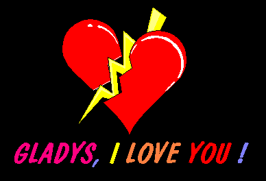

Do not adjust your monitor, and stop hitting the refresh button.
This is a real hack.
Hi everyone !
The Internet Terrosists of HFD are back :o)
Ph34R uS !!!
Today, the only hacker in the place is The Niluminous.
And he has a very important message to delivrate...
But sorry, the message is in french...
Je ne te connais pas...
Je ne te connais pas,
Mais je t'aime déja,
Je sais que c'est fou
Mais je suis à genoux
Devant ton beau sourire
Qui me fait tant frémir.
Je ne connais que ton prénom,
Mais tu réveilles de mon âme le démon,
Et je suis mort de peur
Quand je vois mon pauvre coeur
Qui t'aime et te chérie tant,
Et qui plus que tout t'est aimant.
Je ne sais plus quoi dire,
Ma main refuse d'écrire,
Et ce ridicule poème s'achève
Quand mes sentiments me crèvent,
Que mon coeur aimant s'entaille
Et que la tristesse m'assaille...
Gladys, je ne sais si un jour tu liras ce message, mais sache
que du premier jour où je t'ai vu, je ne t'ai jamais oublié.
Je n'ai jamais su quoi te dire, le simple fait que tu
sois là m'empêchant de parler, paralysé de la terreur
de passer pour un idiot, paralysé par la terreur de te
donner une mauvaise image de moi,... paralysé d'amour.
Je sais que ça peut paraitre dingue, tu dois te dire que
je dis t'aimer alors que je ne te connais pas, tu dois
te demander ce qui me pousse à te dire que je t'aime.
Je ne saurais te répondre.
Je me réveille en pensant à toi, je mange en pensant à toi,
je me lave en pensant à toi, je m'endors en pensant à toi,
et quand je dors, je dors en revant de toi.
JE T'AIME.
Maintenant, tu sais ce que je ressens pour toi.
Libre à toi de réagir ou pas.
You can contact us at :
Hacked@Mailme.Org
COPYWRONG 1999-2001 HFD INCORPORATED
ALL RIGHTS & ALL LEFTS ARE NOT IN THE MIDDLE